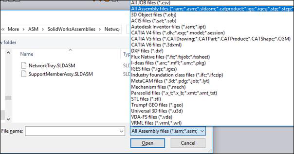
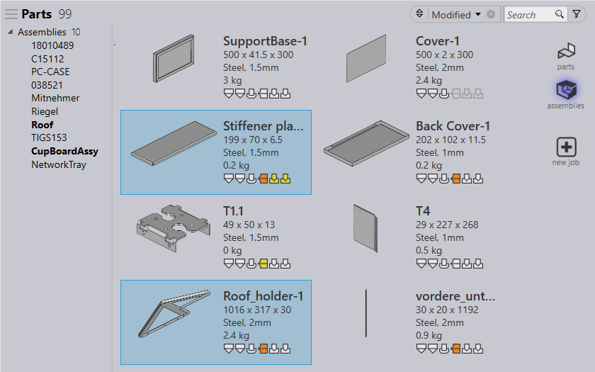
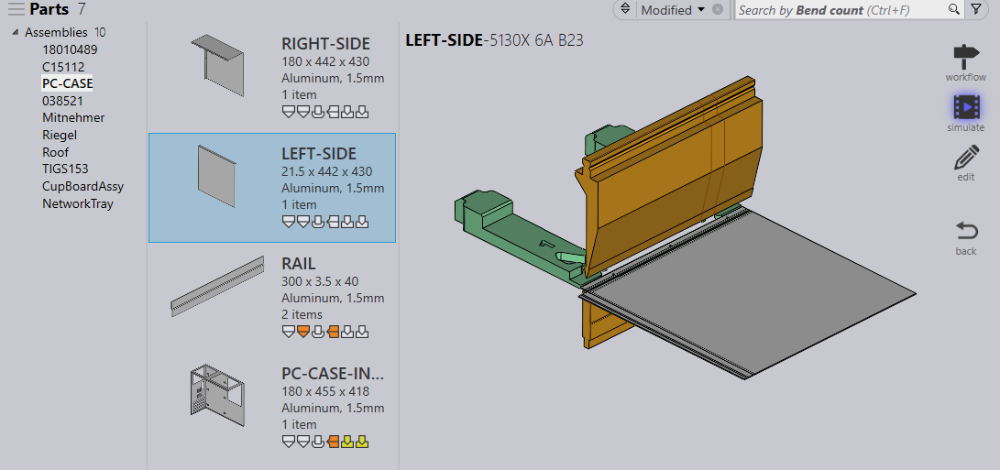
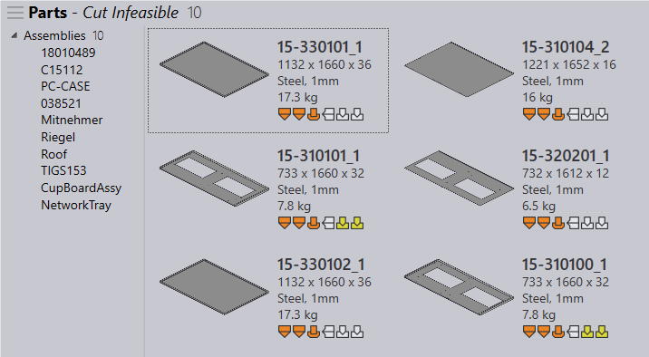

Praxis can import and explode assemblies into Parts and non-sheet metal components. To import assemblies : use open command, choose Import Parts… option and select assembly files in open – file dialog. All Assembly files filter can be used to filter assembly – only files in the file dialog.

Once imported, Praxis displays the assembly list under the assemblies tree in the Part Library. Click on the assemblies toolbar button on the right to switch to this view. In this mode, the library displays the filtered list of assemblies abd respective parts. Selecting one or more parts in parts pane, highlights the respective assemblies.

Selecting an assembly from the tree in left, displays parts from the selected assembly with the total part quantity in the assembly. Apart from showing assembly part list, the rest of the UI is same as part library. (so, you can double click a part to switch to the details page.)

Part Library search/filters and saved searches can be applied on assembly – only parts in the assemblies view to search specific parts.
